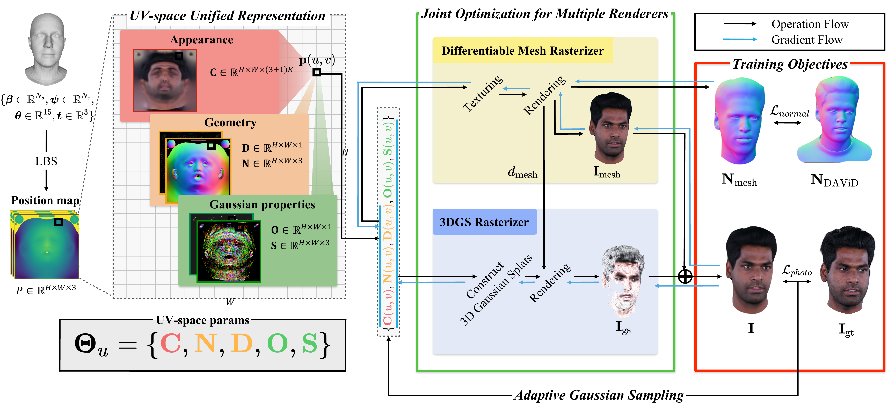
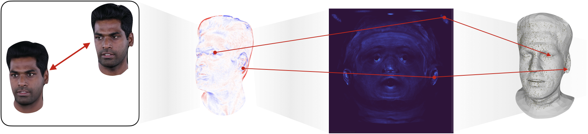

We present URHead, a unified representation for high-fidelity and animatable head avatars that fundamentally redefines mesh-Gaussian integration. While mesh-based methods offer precise geometric control but lack photorealistic detail, and Gaussian-based approaches achieve photorealism but suffer from poor structural consistency, existing hybrid solutions fail to fully leverage their complementary strengths. Our key contribution is a UV-space unification where both representations share a common UV parameterization. Through joint optimization with adaptive gaussian sampling, our method automatically learns to disentangle and allocate appropriate roles to each component. URHead maintains full parametric controllability while preserving subject-specific details, outperforms existing state-of-the-art methods in reconstruction quality and animation consistency.
URHead reformulates both the parametric mesh and 3D Gaussians as functions defined over a shared UV domain, enabling true parameter-level integration rather than mere spatial binding. Built on the FLAME parametric facial model, our unified representation Θu = {C, N, D, O, S} encodes all facial attributes as dense UV maps:

Overall pipeline of URHead. Given monocular video frames and FLAME parameters, we construct a position map via linear blend skinning. The unified UV-space representation Θu = {C, N, D, O, S} feeds two renderers — a differentiable mesh rasterizer and an occlusion-aware 3DGS rasterizer — that share the UV-space parameters and are jointly optimized through coupled gradient flows. The final image is composited via alpha blending, and the adaptive Gaussian sampling module allocates new points based on reconstruction error.
A differentiable mesh rasterizer and an occlusion-aware 3DGS rasterizer share the UV-space attribute maps, so gradients from both rendering paths jointly update the same parameters during backpropagation. This cross-renderer gradient coupling lets the Gaussian flow directly refine mesh geometry through the shared normal map, enabling coordinated refinement of structure and appearance. The final image is composited from the Gaussian and mesh layers via alpha blending, I = Igs + T · Imesh.
Because the UV domain is surface-aligned and consistent across renderers, photometric reconstruction errors can be projected back onto the surface and accumulated over the video sequence. New Gaussians are allocated in proportion to the accumulated error, densifying under-represented regions (wrinkles, pores, subtle facial structures) while suppressing redundancy elsewhere.

Adaptive Gaussian allocation through error-driven sampling. We project photometric reconstruction errors from image space to UV space, producing an error map (brighter colors indicate larger errors). Based on this distribution, we sample new Gaussians, shown as a 3D point cloud (right).
Averaged results on the INSTA dataset (5 subjects). URHead consistently outperforms six state-of-the-art monocular Gaussian-based head avatar methods across pixel-level (PSNR), structural (SSIM), and perceptual (LPIPS) metrics — with a particularly large margin on LPIPS.
| Method | PSNR ↑ | SSIM ↑ | LPIPS ↓ |
|---|---|---|---|
| SplattingAvatar | 31.57 | 0.9471 | 0.0373 |
| GaussianAvatars | 33.39 | 0.9619 | 0.0326 |
| FlashAvatar | 32.41 | 0.9502 | 0.0602 |
| GaussianBlendShape | 34.05 | 0.9674 | 0.0326 |
| FateAvatar | 32.73 | 0.9556 | 0.0304 |
| RGBAvatar | 34.14 | 0.9633 | 0.0251 |
| URHead (Ours) | 35.18 | 0.9675 | 0.0149 |
URHead also achieves the most stable animation, with the lowest frame-to-frame LPIPS on INSTA (mean 0.0153 vs. 0.0267 for the next best, RGBAvatar), indicating temporally consistent renderings without flickering under animation-driven deformation.
Component analysis on the INSTA dataset. Removing the Gaussian branch causes the most significant degradation in perceptual quality, confirming that the fixed-topology mesh alone cannot capture high-frequency appearance. Each component — normal supervision, occlusion-aware blending, and the mesh-only photometric term — contributes to the final quality.
| Method | PSNR ↑ | SSIM ↑ | LPIPS ↓ |
|---|---|---|---|
| w/o 3DGS | 33.60 | 0.943 | 0.057 |
| w/o Lnormal | 34.45 | 0.948 | 0.047 |
| w/o occlusion-aware blending | 33.63 | 0.949 | 0.045 |
| w/o mesh-only photometric term | 34.90 | 0.955 | 0.031 |
| Ours (full) | 35.31 | 0.958 | 0.022 |